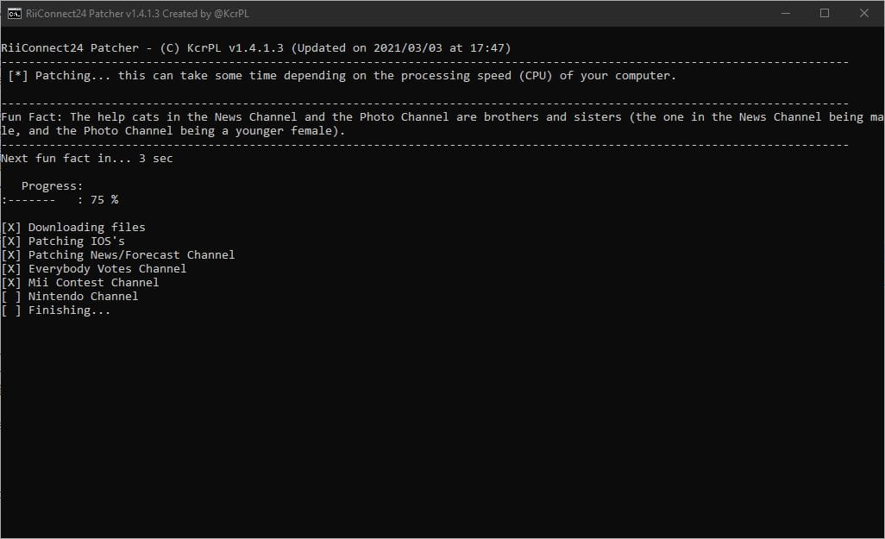

Guide RiiConnect24 vWii
Si vous avez besoin d’aide pour quoi que ce soit concernant ce didacticiel, veuillez rejoindre le serveur RiiConnect24 Discord (recommandé) ou [ envoyez-nous un e-mail à [email protected] ](mailto: support @ riiconnect24 .net).

Guide d’installation de RiiConnect24 sur vWii (Wii virtuelle sur Wii U).
Étant donné que certaines fonctionnalités de la Wii d’origine ne sont pas présentes dans la vWii, nous ne pouvons utiliser que partiellement RiiConnect24. Voir ce qui fonctionne actuellement pour plus de détails. {: .notice–warning}RiiConnect24 vous permet d’utiliser des services interrompus de WiiConnect24, qui incluent les infos, la météo, les votes, Nintendo et la chaîne concours Mii, ainsi que la messagerie Wii.
Ce guide est pour vWii (Wii Mode sur Wii U) seulement.
- Suivez ce tutoriel si vous voulez installer RiiConnect24 sur ton Wii.
- Suivez ce tutoriel si vous souhaitez installer RiiConnect24 sur Dolphin Emulator.
N’INSTALLEZ PAS RIICONNECT24 SUR UNE WII MINI ! Cela ne fonctionnera pas et cela briquera le système.
Avertissement
Nous ne sommes PAS responsables si vous brickez ou endommagez votre console de quelque manière que ce soit. Si vous suivez ce guide à la lettre, vous ne devriez pas avoir de problème.
N’utilisez PAS ce guide sur une autre console que la vWii (Wii virtuelle sur la Wii U). Si vous cherchez des instructions pour une Nintendo Wii, utilisez ce guide. Si vous souhaitez effectuer ce guide sur l’émulateur Dolphin, utilisez ce guide.
Ce dont vous avez besoin
- Une carte SD ou un périphérique USB
- Un ordinateur
- Une console Wii U avec une connexion Internet capable de lancer le Homebrew Launcher (soit via l’exploit du navigateur Web, Haxchi ou Coldboot Haxchi). Si vous n’avez pas de console Wii U modifiée, veuillez suivre wiiuguide.xyz, ainsi que le guide de modding virtuel de la Wii puis revenez.
- Un ID de Nintendo Network (NNID) lié à votre Wii U
- Patcher Riiconnect24 (Windows, Mac et Linux)
Après avoir suivi le guide lié ci-dessus, vous devriez avoir:
- Une sauvegarde et des clés de la NAND vWii (gardez celles-ci stockées en toute sécurité!!)
- Le Homebrew Channel installée
- d2x cIOS installé (IOS249, IOS250 et IOS251)
- IOS80 patché
Instructions
Section I - Exécuter le patcher
Si vous ne pouvez pas faire marcher le patcher Riiconnect24, Rejoignez le Discord Server Riiconnect24 (recommandé) ou e-mailez nous chez [email protected] pour assistance.
- Cliquez sur le lien ci-dessus pour accéder à la page GitHub où se trouve le patcher.
- Téléchargez
RiiConnect24Patcher.batsi vous êtes sous Windows, etRiiConnect24Patcher.shsi vous êtes sur un système Unix - Sur Windows ouvrez
Riiconnect24Patcher.bat. Sur les systèmes Unix, ouvrez le terminal et tapezbash, puis faites glisserRiiConnect24Patcher.shdans le terminal et appuyez sur Entrée. Cela devrait ressembler à cecibash RiiConnect24Patcher.sh. - Appuyez sur 1 pour choisir “
Start” et confirmez votre sélection en appuyant surENTER. (NOTE : Ces captures d’écran proviennent de la version Windows du patcher.)
- Sélectionnez le périphérique pour lequel vous êtes en train de patcher.

- Pour ce guide, choisissez “
Installer RiiConnect24 sur votre Wii”
- Choisissez “
Express (Recommendé)”. Cela vous procurera tout ce dont vous aurez besoin.
- Sélectionnez votre région.

- Pendant que vous y êtes, RiiConnect24 Patcher peut également télécharger d’autres chaînes optionnelles qui n’utilisent pas RiiConnect24.
[X]Représente l’option sélectionnée. Appuyez simplement sur 5 etENTRÉEsi vous n’êtes pas intéressé.
- Connectez votre carte SD ou votre périphérique USB à votre ordinateur et sélectionnez “
1”.
- Si votre périphérique est correctement détecté, sélectionnez “
1”. Sinon, assurez-vous qu’il y a un dossier appeléappssur votre carte SD ou votre clé USB et réessayez.
- Soyez patient… 
- Après que ça se termine, on apprécié so vous prenez une minute pour nous envoyer un commentaire anonyme. Si vous ne voulez pas, fermez le patcher. Tous les fichiers dois être sur votre carte SD.


- Si tout n’a pas été copié automatiquement sur votre carte SD ou votre périphérique USB, copiez les dossiers
WADetappsà côté deRiiConnect24Patcher.bat, et collez-les sur votre carte SD ou votre périphérique USB.
Section II - Installer des wads
Vous allez maintenant installer les IOS patchées et chaînes WADs aui sont nécessaires pour utiliser Riiconnect24.
- Insérez votre carte SD ou votre clé USB dans votre Wii U.
- Lancez l’Homebrew Channel sur votre Wii U.
- Lancez Wii Mod Lite.
- À l’aide de la croix directionnelle de votre télécommande Wii, accédez à
WAD Manager, puis accédez au dossierwad. - Surlignez tous les WADs du dossier en appuyant sur le bouton + pour les sélectionner. Quand tous les WADs sont sélectionné, appuyez A deux fois pour installer les WADs.
- Si vous obtenez une erreur indiquant qu’un titre avec une version supérieure est déjà installé (erreur -1035), revenez au menu de sélection WAD et appuyez sur le bouton - sur le WAD en surbrillance pour le désinstaller, puis réessayez de l’installer.
- Une fois qu’ils sont tous correctement installés, appuyez sur le bouton HOME pour revenir au Homebrew Channel.
Section III - Patcher 43db pour le 16:9 (optionnel)
- Lancez ww-43db-patcher et attendez qu’il se termine.
Si vous installez un thème, vous devrez exécuter à nouveau le ww-43db-patcher .
Section IV - Utiliser RiiConnect24
Après avoir suivi les sections ci-dessus, vous avez presque prêt à utiliser RiiConnect24 sur votre Wii U. Il vous suffit d’effectuer les étapes suivantes après chaque redémarrage de vWii.
- Sur le Menu Wii de la vWii, lancez la chaîne ConnectMii.
- Cela activera WiiConnect24 et Standby Connection requis par WiiConnect24.
- Lancez les chaînes WiiConnect24.
- Vous devriez maintenant être en mesure d’utiliser toutes les chaînes WiiConnect24 que vous avez installées.
Qu’est-ce qui fonctionne actuellement ?
Les services RiiConnect24 suivants sont fonctionnels sur la vWii :
- Chaîne Météo
- Chaîne Infos
- Chaîne Votes
- Chaîne Nintendo
- Chaîne Concours Mii
Les services RiiConnect24 suivants sont non fonctionnels sur la vWii :
- Wii Mail (la plupart des fonctionnalités n’existent pas sur vWii)
- Cela inclut envoyer/recevoir des mails à/depuis des amis.
La plupart des services qui utilisent WiiConnect24 seront en mesure de fonctionner si vous laissez la vWii fonctionner pendant plusieurs heures. Il n’y a pas de mode veille sur la console.